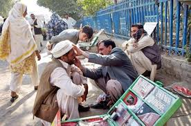

خبریں
حکومت سند ھ کا جعلی طبیب اور غیر مستند ڈاکٹر ز کی روک تھا م کا فیصلہ معاشرے کے لئے بہتر نتائج کا حامل ہے اور اس ضمن کا متقاضی ہے کہ اس پر مزید غور و خوض کیا جائے کیونکہ دیہات کے ساتھ ساتھ شہر میں بھی اچھے اور مستند ڈاکٹر ز سے علاج مہنگا ہونے کے باعث سستے غیر مستند ڈاکٹرز نے جڑ پکڑ لی ہے۔حکو مت سندھ دیہاتی اور شہرکے غریب لوگوں کی صحت کی دیکھ بھال کے لئے منظم نظام بنانے میں ناکام ہے۔ پالیسی میکر بڑے بڑے دعوے کرنے کے باوجود غریب مریضوں کی زندگی میں دلچسپی لیتے نظر نہیں آتے۔دیہاتوں اور شہرکے کچی آبادی میں عطائی ڈاکٹر ز مریضوں کو ابتدائی طبی مدد دیا کرتے تھے لیکن اب "ماہر ٍجلد "،"ماہرفزیشن" "ماہر سرجن" " معالج ٍ کینسر " جسے دعوے کرتے دیکھائی دیتے ہیں۔اسے معالج غریب عوام کی ہی حمایت سے پنپتے نظر آتے ہیں۔ہمارے خصوصی معاشرتی طور پر علاج پہلے تو گھر سے ہی شروع کیا جاتاہے۔ جہاں گھر کی بڑی بوڑھیاں عام طور پر غذا،جڑی بوٹیوں اور ٹوٹکوں سے علاج کرتی ہیں اگر کوئی سنجیدہ مسئلہ ہو تو علاج کے لیے جراح،پنساری،نیم حکیم یاغیر مستندہومیوپیتھ کے معالج کے پاس جایاجاتاہے۔لوگوں کی نظر عام طور پر کم خرچ علاج پر ہوتی ہے۔ان کے خطرناک اثرات پر نہیں ہوتی۔اکثر عطائیوں کے ہاتھوں خراب ہوجانے والے کیس کو پھر ہسپتال لے جایاجاتاہے۔مگر تب تک دیر ہوچکی ہوتی ہے۔
عطائی کے کلینک پر دورانٍ آپریشن نو مولود جاں بحق،ماں کی حالات خراب، عطائی ڈاکٹر کی نااہلی سے خاتون ہلاک، غیر مستند ڈاکٹر کے غلط انجکشن سے بچہ معذور ہوگیا، میڈیکل اسٹور کے سل مین کی دوائی سے بوڑھا شخص چل بسا، نام نہاد لیڈی ڈاکٹر نے ماں بچے کی جان لے لی اور اسی طرح کی خبر یں آئے دن ہم اخبارات اور ٹیلویژن پر دیکھتے ہیں۔ محض پیسوں کے خاطر انسانی صحت اور زندگی سے کھیل جاتے ہیں۔ اسے معالج نہ تو میڈیکل کی تعلیم یا سند رکھتے ہیں نہ ہی ان کا تجربہ اس معیار کا ہوتا ہے نہ ہی یہ کسی مستند میڈیکل،انسٹیٹوٹ یا ادارے سے رجسٹر ڈ ہوتے ہیں۔اسے معالج کو عرف عام میں "عطائی" (quack)کہتے ہیں۔ حکومت سندھ نے ہر طرح کے ادارو ں کی شماریات کا ایک جامع پروگرام اور حکمت عملی تیار کی ہے تاکہ ایسے اداروں اور عطائیت کے اڈوں کی نشاندہی ہوسکے۔
یو تو پاکستان میں عطائیت کے خاتمے کے لیے بیشترقوانین موجود ہیں تاہم ان پر سختی سے عملدارآمد کی ضرورت ہے پاکستان میڈیکل ایسوسیشن کی رپورٹ کے مطابق تقریباً ۲ لاکھ عطائی ڈاکٹر ز کے کلینک سندھ بھر میں موجود ہیں۔ محکمہ صحت کی رپورٹ کے مطابق گزشتہ سال صرف حیدرآباد میں ۹۸ ۳ عطائی ڈاکٹر ز کام کر ر ہے تھے جن میں سے ۰۷ ا عطائیت کی منڈیوں کو سیل کیا جا چکا ہے لیکن۹۱ ۲ عطائیت کے اڈے اب بھی چل رہے ہیں۔ جو کے لیاقت کالونی، ہیرآباد ،پریٹ آباد، پھلیلی،مکرانی پاڑہ اور حیدرآباد سائٹ ایریا میں موجود ہیں۔ حکومت سندھ کی ان تمام تر خدمات کے باوجود ایک مسئلہ غور طلب ہے کہ ایک محتاط اندا ز ے کے مطابق صرف حیدرآباد میں ہر ۲۴مریضوں پر ایک غیر مستند اور عطائی معالج موجود ہے جب کے ہر ۰۲۳ مریضوں پرایک کوالیفائڈڈاکٹر موجود ہے۔ پھر یہ بھی ہے کہ علاقائی سطح پر مریضوں کی عطائیوں، ڈسپینسرز اور دائیوں تک آسان رسائی ہوجاتی ہے اس کے علاوہ چونکہ یہ سستااور کم قیمت علاج ہوتاہے لہٰذایہ لوگ ان علاقوں میں محترم اور قابل قبول ہوتے ہیں۔ ماہر فزیشن "ڈاکٹر محمد ادریس باوانی " کے مطابق کئی عطائی اڈے حیدرآباد شہر میں کا م کررہے ہیں جن میں کم تجربہ کار نرسیس، ڈسپینسر نہ تجربہ کا ر فارمیسی ڈسپینسر اور حکیم،ہومیوپیتھک ڈاکٹرز جو کے الوپیتھک معالج بن کر کلینک چلارہے ہیں۔ حیدرآبادمیں اسے عطائی بھی موجود ہیں جنہیں عطائیت ورثے میں ملی ہے ڈیگری والد کی ہونے کے باوجود وہ اپنے والد کی ڈگری کی بنیاد پر اب بھی دندان سازبنے بیٹھے ہیں اپنے والدکے عطا کردہ ہنر سے کم قیمت میں غریب عوام کا علاج کرتے دیکھائی دیتے ہیں۔ مجھے اس بات پر شدید حیرت ہے کہ یہ کس طرح کے عطائی ہیں اور انھیں انسانی جانوں سے کھیلنے کا سرٹیفکیٹ کس نے دیاہے۔عطائی ڈاکٹر ز کے علاج سے زیادہ ان کے آلات بڑی بیماریوں کا باعث بن رہے ہیں خاص طور پر سڑکوں اور پارکوں میں بیٹھے نام نہاد داندن ساز ایڈز اور ہیپاٹائٹس جیسے خطرناک امراض کے پھیلنے کا سبب بن رہے ہیں۔ اسی طرح ٹوٹی ہڈیا ں جوڑنے والے جراح بھی مریضوں کو معذور بنادیتے ہیں۔ یہ کسی عطائیت ہے جو انسانی صحت کو داؤ پر لگا دیتی ہے۔یہ عطا ان عطائیوں کو کہاں سے عطا ہوتی ہے۔ "عطا " تو ایک پاکیزہ اور معتبر لفظ ہے۔ جو اللہ تعالٰی کی جانب سے خاص عنایت کے لئے استعمال ہے۔چونکہ ان معا لجین کا علاج سستا ہوتا ہے۔ لہٰذا غریب مریض ان کے پاس جانے پر مجبور ہے۔المیہ یہ ہے کہ لوگ ان کے خوفناک نتائج سے نہ آشنا ہو کر" عقیدے " ا ور ہاتھ میں "شفا " جسے لفظ استعمال کرکے انھی عطائیوں کے کلینک کا تقاضا کر تے نظر آتے ہیں۔ چونکہ عطائیت دیہات کے ساتھ ساتھ شہر میں بھی جڑ پکڑچکی ہے اسی لیے لوگوں کو غیر مستند معالج کے علاج سے خوفناک نتائج سے واقف کرانا بے حد ضروری ہے۔ اس کے ساتھ ہی ضرورت اس امر کی بھی ہے کہ سندھ حکومت کو ا یسی حکمتٍ عملی اپنانی چاہیے۔جوکہ سر کاری ہسپتالوں کی حا لاتٍ زار، علاج کے طریقہ کا ر اور ادویات کی فراہمی کے نظام میں بہتر ثابت ہو۔ جس سے لوگوں کا اعتماد سرکاری ہسپتالوں کی طرف راغب ہو۔ اگر یہاں صحت کی سہولت معیاری سطح کی ہوں،ادویات دستیاب ہوں،ڈاکٹرز اور تربیت یافتہ عملہ موجود ہوتو عطائیت ازخود دم توڑ دے گی۔"وہ جو ایک محاورہ ہے مرتا کیا نہ کرتا "تو وہ اس پر صادق آتاہے۔ضرورت مند آندھا ہوتاہے،جس مریض کو کوالیفائیڈ ڈاکٹر،ادویات،علاج اور ٹیسٹ کی آسانی،سستی اور قریب تر سہولتیں میسرنہ ہونگی تو ایسا مریض دم جھاڑ،غیر مستندحکیم یاہومیوپیتھ یاکسی عطائی کے پاس جانے پر مجبورہوگا۔اس امر کی طرف بھی خصوصی توجہ کی ضرورت ہے۔تاکہ سندھ ہیلتھ کئیر کمیشن کی کوششیں حقیقی کامیابیاں حاصل کرسکیں۔
ارحم خان